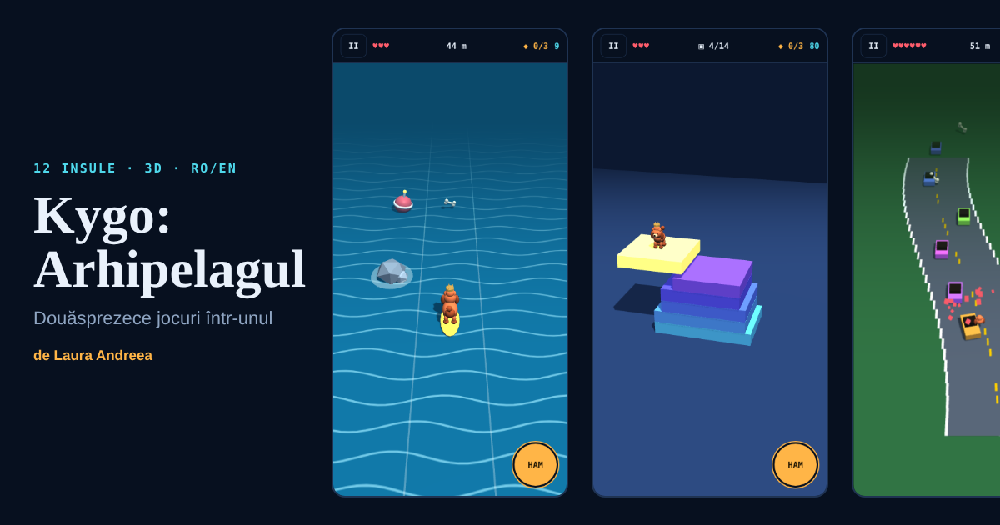

Studiu de caz · noiembrie 2026
Kygo: Arhipelagul — douăsprezece jocuri refolosite într-unul
Aveam peste douăzeci de jocuri de browser, fiecare cu o idee bună și cu propriul cod. Am vrut un singur joc care să le pună cap la cap, cu Kygo, pudelul meu toy, ca erou, și care să ruleze tot dintr-un singur fișier, pe GitHub Pages.

Ce am refolosit
| Insula | Mecanica | Jocul-sursă |
|---|---|---|
| Valul | surf pe 3 culoare, rechin la nivelul 5 | Surf Run, SlideStorm Arena |
| Vidul | shooter cu valuri și boss | VOID ORACLE, VOID HUNTER |
| Șarpele-Prismă | snake cu lanțuri de 3 forme | Serpent Prism |
| Arena | air hockey | Puck & Pool Arena, PentArena |
| Livada | tăiat de fructe | LIVADA |
| Conacul | labirint întunecat | Kygo: Pe Urme, BooScary |
| Creasta | sărit și aplecat pe motocicletă | Carpați Enduro |
| Turnul | stivuit de blocuri | BlockForge |
| Zarurile | zbor prin goluri, zaruri cu efecte | DICE DRIFT 3D, ORACLE DRIFT |
| Coșul | aruncări la coș în mișcare | Basket vs AI |
| Circuitul | șosea care șerpuiește, trafic | VELOCITY X, Neon Drift |
| Pârtia | slalom cu evoluția plăcii | GENOBOARD: Evo Rush |
Trei decizii care au făcut posibil un singur fișier
1. Un contract comun pentru toate jocurile. Fiecare insulă e un obiect cu patru funcții: init, update(dt), goal() și bark(). Motorul se ocupă de vieți, scor, pauză, intrări și sfârșitul nivelului. Așa am putut adăuga șase insule noi fără să ating bucla principală.
2. Starea jocului rămâne 2D, iar 3D-ul doar o desenează. Am luat ideea din Kygo World: logica lucrează în pixeli pe un plan, iar Three.js proiectează aceeași stare într-o scenă 3D. Atingerile sunt duse înapoi pe plan cu un raycast. Dacă WebGL lipsește, același joc se desenează pe canvas 2D.
3. Un singur mecanism care le leagă. Lătratul are un buton și o reîncărcare comune, dar un efect diferit pe fiecare insulă: sonar în labirint, timp lent la șarpe, claxon pe circuit. Stelele, oasele de aur și magazinul folosesc aceleași reguli peste tot.
Accesibilitate
Toate jocurile merg din tastatură, cu atingere și cu gamepad. Există viteză de 100, 85 sau 70%, contrast ridicat, mișcare redusă, mod fără eșec și joc cu un singur buton: direcțiile se aprind pe rând și un singur comutator o alege pe cea aprinsă. Formele pietrelor diferă, nu doar culorile. Evenimentele importante sunt anunțate pentru cititoarele de ecran.
Ce nu am făcut
Nu există clasament global, pentru că ar cere un backend, iar regula portofoliului e cost zero. În loc, provocările zilnice și săptămânale folosesc aceeași sămânță pentru toți, iar codul de provocare trimite unui prieten exact aceeași hartă. Dificultatea a fost verificată doar cu teste automate, nu calibrată prin joc real, iar telefonul fizic, Safari și cititorul de ecran rămân de verificat.
Case study · November 2026
Kygo: The Archipelago — twelve games reused in one
I had more than twenty browser games, each with one good idea and its own code. I wanted a single game that strings them together, starring my toy poodle Kygo, shipped as one file on GitHub Pages.
A shared contract. Every island is an object with init, update(dt), goal() and bark(). The engine owns lives, score, pause, input and the end of a level, so six new islands needed no change to the main loop.
2D state, 3D picture. As in Kygo World, the logic works in pixels on a plane and Three.js draws that state as a 3D scene. Touches are cast back onto the plane. Without WebGL the same game draws on a 2D canvas.
One mechanic that ties it together. The bark has one button and one cooldown but a different effect on each island. Stars, golden bones and the shop follow the same rules everywhere.
Accessibility. Keyboard, touch and gamepad; 100/85/70% speed; high contrast; reduced motion; a no-fail mode; and one-switch scanning, where directions light up in turn and a single switch picks the lit one.
There is no global leaderboard, because that needs a backend and the portfolio runs at zero cost. Daily and weekly challenges share one seed for everyone, and a challenge code sends a friend the exact same map. Difficulty was checked with automated tests only; physical phones, Safari and screen readers remain unverified.
Made by Laura Andreea.